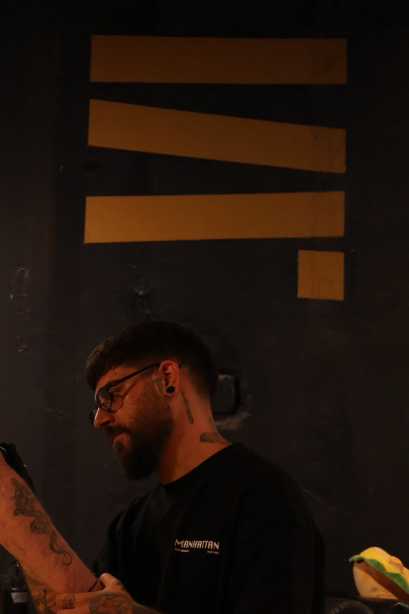
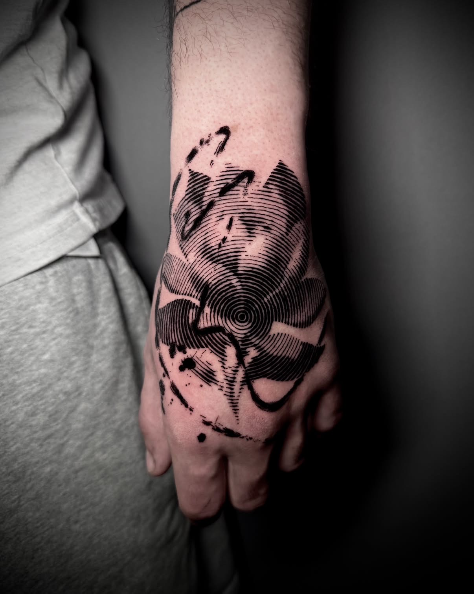
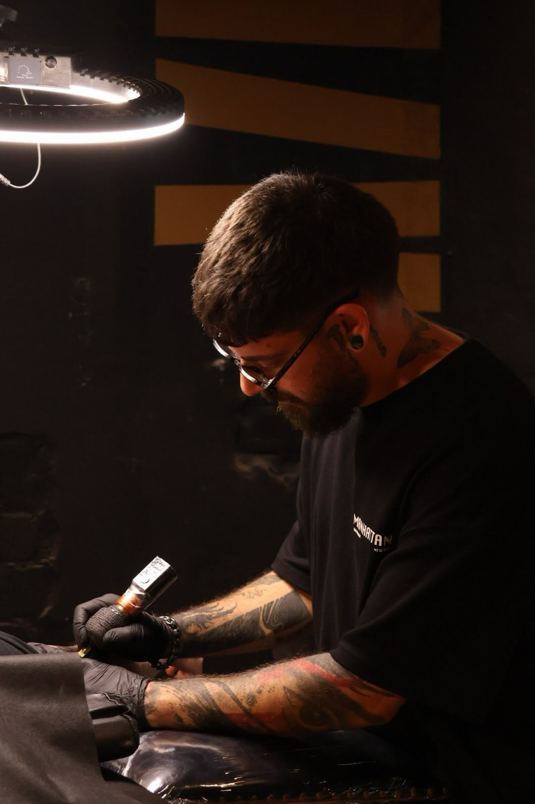
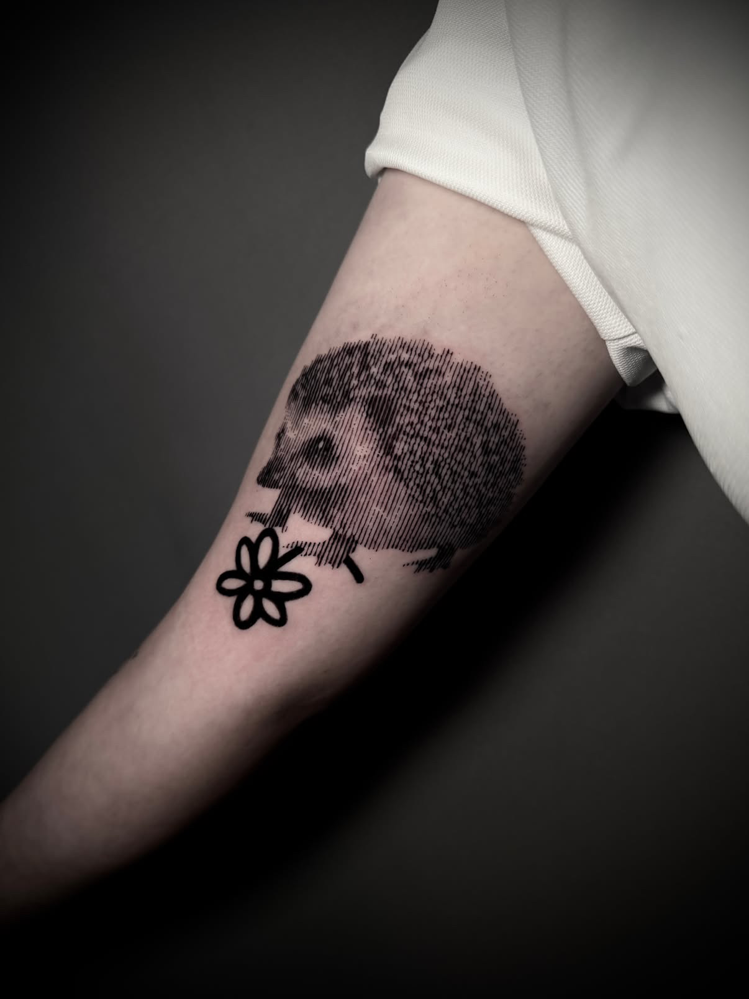
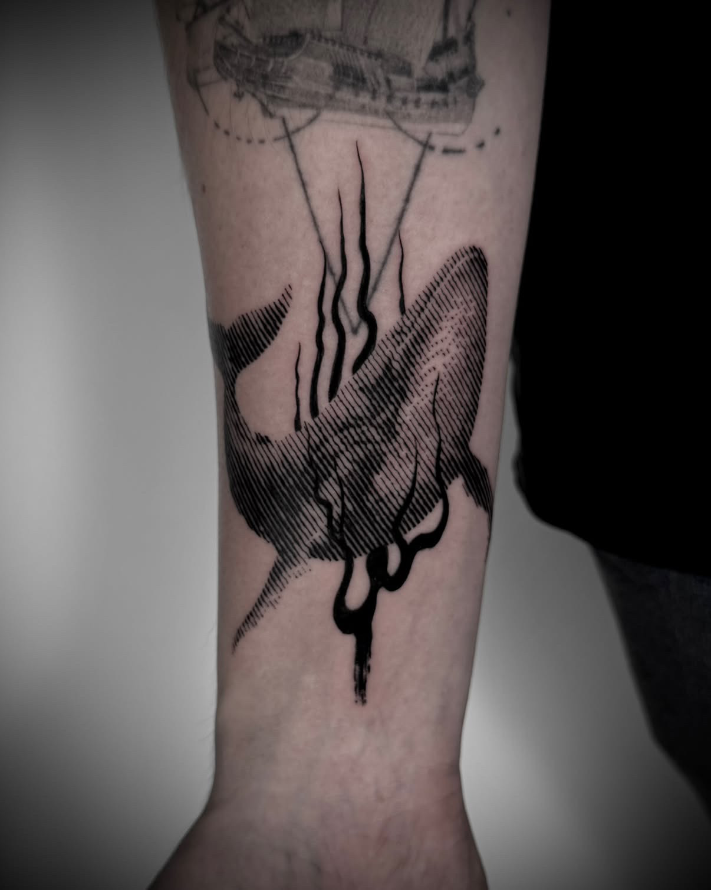

Tom Eshet: realism built from lines
On artistic language, precision, healed work and the freedom within a recognizable style
From a distance, a realistic image. Up close, the lines that build its light, shadow and depth. In our full interview, Tom Eshet talks about finding his artistic language, keeping a person recognizable when changing a portrait, and learning from healed work. He also discusses client ideas, the freedom of the design process, and where AI might fit into an artist’s practice.

Photograph supplied for the interview.1. At first glance and up close
TATTOO TUT: What is the earliest image you remember being fascinated by, and can you still see a trace of it in your work today?
Tom Eshet: For as long as I can remember, I’ve always been drawn to images that have something more to them than what you see at first glance. I love artwork that makes you stop, look closer, and try to understand how it was created.
I think that fascination is still very much present in my work today. With my halftone technique, for example, from a distance you see a realistic image, but when you get closer, you realize it’s made entirely of lines. That contrast is something I find really fascinating.
2. Finding a language of your own
TATTOO TUT: Was there a particular tattoo where halftone first felt like your own artistic voice? Tell us about it.
Tom Eshet: I don’t think it happened with one specific tattoo. It was more of a process of experimenting, learning, and constantly refining my technique.
What originally attracted me to halftone was the idea that you could create a realistic image, with depth, light, and shadow, using nothing but lines. No traditional shading and no gray tones.
Over time, I started to understand how even the smallest change in line thickness or spacing could completely transform an image. The deeper I explored the technique, the more I felt I was developing an artistic language that truly represented me.

Work by Tom Eshet. Photograph supplied for the interview.3. Keeping the person recognizable
TATTOO TUT: When you fragment or distort a portrait, what do you most want to preserve about the person in it?
Tom Eshet: The most important thing for me is preserving the person’s character and expression.
I love experimenting with compositions, breaking shapes apart, and combining different graphic elements. But at the end of the day, I still want the portrait to communicate emotion and remain recognizable.
I believe that even when you change the way a face is presented, you shouldn’t lose what makes that person unique.
4. Where improvisation happens
TATTOO TUT: With such precise linework, how much room do you leave for improvisation? Can you remember a piece that surprised you?
Tom Eshet: Probably a lot less than people might think.
My technique requires very careful planning. Every line affects the lines around it, and even a small deviation can change the final result.
But most of my creative freedom happens during the design process. I love experimenting with different compositions, combining styles, and looking for unexpected solutions.
For me, artistic freedom and technical precision don’t contradict each other. They actually complement each other.

Work by Tom Eshet. Photograph supplied for the interview.5. Less detail, the same depth
TATTOO TUT: What outside tattooing has most changed the way you see, and where does that influence show up in your work?
Tom Eshet: I think graphic design, photography, and the way light and shadow interact have had a big influence on my aesthetic.
I’m especially drawn to minimalism and the ability to communicate so much with very few elements.
That’s something I carry into my tattoos as well. I’m always looking for what I can remove from a design without losing its depth or meaning.
 Work by Tom Eshet. Photograph supplied for the interview.
Work by Tom Eshet. Photograph supplied for the interview.6. When two ideas meet
TATTOO TUT: Has a client’s story ever taken a design somewhere you would never have gone on your own? Tell us what happened.
Tom Eshet: One of the things I love most about tattooing is the meeting point between a client’s idea and my own artistic interpretation.
Sometimes a client comes to me with an idea or a combination of elements I would never have thought of myself. And often, that challenge can lead to some of the most interesting results.
I try not to reject ideas just because they’re different from what I would normally create. Instead, I like exploring how I can take those ideas and translate them into my own artistic language.

Work by Tom Eshet. Photograph supplied for the interview.7. Learning from healed work
TATTOO TUT: What do you look for when you see one of your tattoos healed, and how does that influence your next design?
Tom Eshet: For me, a tattoo shouldn’t be judged only by how it looks the moment it’s finished, but more importantly by how it looks once it’s healed and how it holds up over time.
This is especially important with my technique because tattoo lines naturally tend to expand slightly as they age.
I pay close attention to the spacing between the lines, the contrast, and how clearly the image reads. I want to make sure the design maintains its depth and details even after healing.
Every healed tattoo teaches me something that I take into my next piece.
8. The artist’s responsibility
TATTOO TUT: What is one belief about being a good tattoo artist that you have changed your mind about?
Tom Eshet: In the past, I used to place a lot of importance on an artist’s technical ability.
Today, I believe being a good tattoo artist goes far beyond being able to create a beautiful tattoo.
It’s about knowing how to listen to your clients, understanding the body, making the right decisions about size and placement, and sometimes even knowing when to tell someone that a certain idea simply won’t work well as a tattoo.
I believe our responsibility is to create something that looks good not only today, but also years down the road.
 Work by Tom Eshet. Photograph supplied for the interview.
Work by Tom Eshet. Photograph supplied for the interview.9. Beyond a recognizable style
TATTOO TUT: What would someone who only knows your tattoos be surprised to learn about you?
Tom Eshet: Maybe the fact that behind all those carefully planned and precise tattoos is someone who really loves experimenting and exploring new directions.
I love the style I’ve developed, but I definitely don’t want to feel limited by it.
I enjoy combining different artistic worlds, sometimes even ones that seem completely opposite, and seeing how I can turn them into something new.

Work by Tom Eshet. Photograph supplied for the interview.10. Choosing to specialize
TATTOO TUT: What is one decision you made as an artist that you would make again, even though it was difficult?
Tom Eshet: The decision to focus on a very specific style and dedicate myself to developing it as deeply as possible.
When you choose to specialize in one technique, you’re also giving up, to some extent, the freedom to do absolutely everything.
But I believe that developing a true artistic identity requires time, experimentation, mistakes, and constant refinement.
I’m really glad I chose that path because it allowed me to create something that genuinely feels like my own.
11. The place of AI
TATTOO TUT: How do you feel about AI in tattooing? What role, if any, would you give it in your own creative process?
Tom Eshet: I think artificial intelligence is a really interesting tool, and like any new technology, what matters most is how we choose to use it.
I see it as something that can support the creative process, especially when exploring ideas, building compositions, and experimenting with different directions.
But for me, AI doesn’t replace the artist.
Understanding what works on the body, how a tattoo will heal, how to adapt a design to a specific person, and how to actually execute it all require experience, knowledge, and human judgment.
I believe the future lies in finding the right balance between technology and creativity, rather than replacing one with the other.
12. What comes next
TATTOO TUT: If nobody expected a particular style from you, what would you be most curious to make next?
Tom Eshet: I’d love to keep exploring combinations of different styles.
I’m especially interested in taking elements from traditional tattooing, like old school designs, and combining them with the realism and linework of my halftone technique.
I love the contrast between something bold, graphic, and simple, and something delicate and highly detailed.
For me, artistic growth isn’t about leaving behind the style I’ve built. It’s about continuing to push it in new and unexpected directions.
 Work by Tom Eshet. Photograph supplied for the interview.
Work by Tom Eshet. Photograph supplied for the interview.